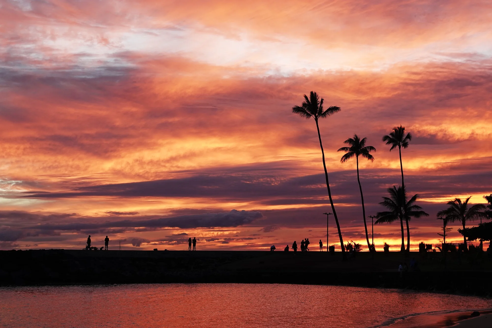
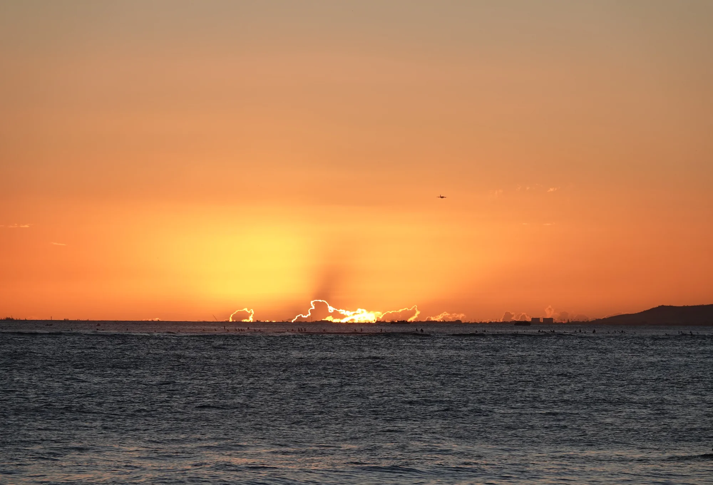
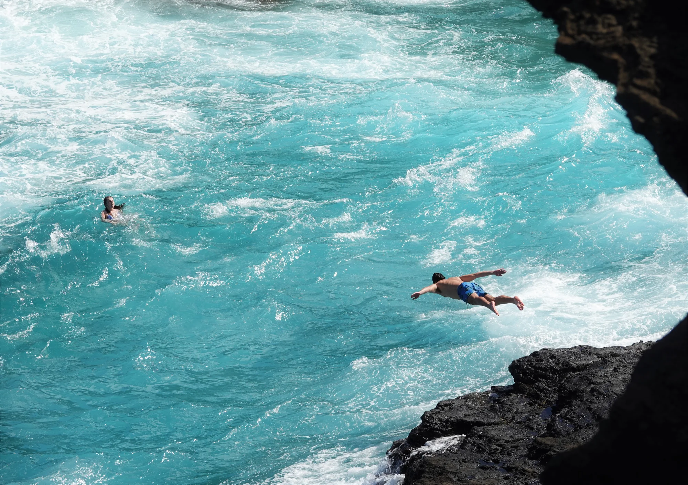
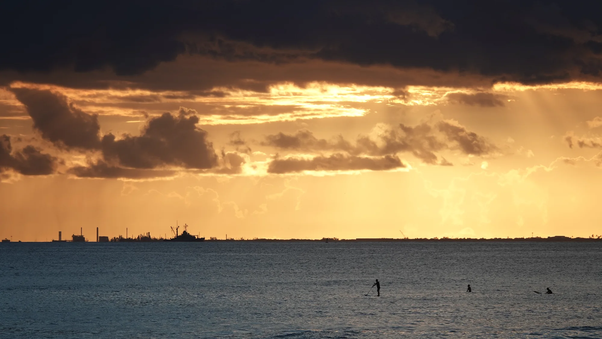
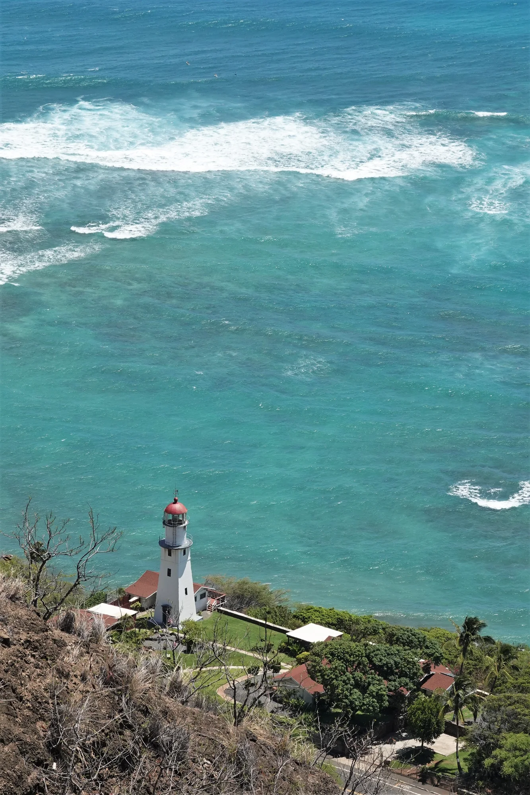

Photography Portfolio
Quiet moments, clean composition, lasting memories.
A minimal photography portfolio for landscapes, family memories, travel stories, and portraits. Replace the sample images with your own photos and publish it with GitHub Pages.

This website is designed to be simple, fast, and photo-focused. It works as a personal portfolio, family photography page, or a lightweight professional photography site.
Selected Work
Gallery




About
Behind the camera
I photograph everyday scenes with a focus on light, atmosphere, and natural emotion. My favorite images are simple: a clean background, a meaningful expression, and a moment that feels real.
You can customize this section with your own photography style, camera gear, location, or story.
Contact
Interested in working together?
Replace this with your preferred contact method. You can link to email, Instagram, Flickr, or a contact form from another service.
your-email@example.com